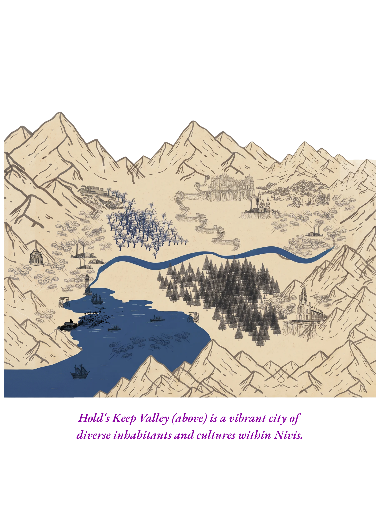

Introduction & Game Setting
The Book of Zailister is one of thirteen planetary supplements expanding upon the core universe book, Into the Uncharted Worlds of Essentia. Each volume delves into planetary histories, cultures, unique features, and stories, with spoiler warnings for key plot points.
Game Setting: Slayers of Rings § Crowns is a sci-fantasy TTRPG across thirteen realms. Technology peaks in the farthest worlds, while ancient magic is strongest near the main sun, Adoria. Zail is the journey's beginning, the heart of prophecy and cosmic conflict.
The Sacred Crowns & Prophecy
The nineteen crowns, forged from Zailister’s rings, are central to its history and cosmic significance. Of the original nineteen, only fourteen remain. Eleven are held by current heirs, three are lost, and five have been destroyed or lost forever. The fate of these crowns shapes the destiny of all races,each crown is more than a symbol: it confers legitimacy, unity, and strength.
Heirs Under Distress: Three crowns are compromised,held by legitimate heirs but threatened by rebellion, political intrigue, or external plots. Three crowns are lost; only those destined can even perceive their location.
The Prophecy: Only nineteen races have true heirs capable of donning these crowns. In times of chaos, prophecy dictates that only those who can see the crowns can claim them. The loss or destruction of a crown sends regions into chaos, while their recovery restores hope and order.
- Total Crowns Originally: 19
- Existing Crowns with crowned heirs: 11
- Total Missing Crowns: 8 (Lost 3, Destroyed 5)
Planetary Overview of Zailister
Zailister (Zail) is the fourth planet in the Essentia solar system, orbiting vibrant Adoria and five worlds from the dying Tawdry Dwarf. Its six continents feature lush forests, tundra, volcanic regions, plains, dunes, and ancient craters. Magical crowns embedded in the landscape radiate mystical auras; auroras and celestial displays are common, and the skies are illuminated by the crowns at night.
- Temperature Range: -20°F to 90°F
- Atmosphere: Nitrogen/oxygen, with faint magical auras, auroras, occasional dust storms
- Inhabitants: Humans, elves, dwarves, halflings, and many more, each tied to their lands and crowns
Zailister’s strategic, magical, and economic importance makes it the universe’s reserve currency holder and a hub for trade, culture, and war.
The Lay of Zailister
Zailister is read from its map. What follows is the shape of the world, the water around it, and the places worth naming on it.
Landmasses
- Glaciera, the far north. Cold, and the home ground of the Neanderthal.
- Nivis, the great central continent, and the bulk of the settled world.
- Terrora, the western landmass, set apart across the Umbra Ocean.
- Natura, running the whole eastern edge of the map.
- Southern Arctic, the ice at the foot of the world.
Additional Named Places
- Red Wolf Woods: A deep woodland territory where red-coated packs, hunters, and old trail markers share the same cover.
- Roaring Green: A green-water river whose loud rapids cut through forest and stone.
- Thunder Blue: A blue-water river known for sudden storms, hard crossings, and booming falls.
- Golden Sea: A broad inland water or grass-gold basin whose surface changes color under Adoria's light.
The Three Oceans
- Umbra Ocean, the west, between Terrora and Nivis.
- Citrine Ocean, the northeast, reaching toward Natura.
- Titan Ocean, the south, running down to the Southern Arctic.
Islands
- Isles of Aestus, north, at the mouth of the Citrine Ocean.
- Chisel Islands, east, off Natura's coast.
- Nivis Islands, the scatter south of Nivis.
- Wandering Wastelands, the broken chain in the northwest of the Umbra Ocean.
The Regions of Nivis
- Lakeland, the northeast, water and high ground together.
- Shadowfen, the deep western woods.
- Mucklore, the southeastern reach.
- Shimmering Grasslands, the open heart of the continent.
- Hold's Keep Valley, set below the peaks.
- Mt. Deadtooth, the mountain the passes are named for.
What Holds the Water
Three powers own the seas of Zailister, and none of them is a people.
- Thalor is a massive, ancient oceanic horror that burrows in the seafloor, controls its currents, and traps its prey. It works the northern Umbra Ocean.
- Dunkleosteus is a colossal, monster fish that tips sea ships and mauls anything that enters the Citrine Ocean.
- Quintus is the god of the seas, commanding the waters, shaping the currents, and reigning over the depths. His reach is the southern water toward the Titan Ocean.
Sacred Fauna: Giant Angel Fish
Giant Angel Fish are native to Zailister's continent of Terrora, especially the waters and upper-air currents near the Aurora Keys. They are natural creatures, not magical beings: their buoyant bodies can move through water, dense air, and the thin upper reaches above the atmosphere. They may float through near-space, but they remain Zailister creatures and do not migrate to other planets.
Their flesh is edible, but hunting them is a grave offense. Terrora is the Goddess of Terrora, the land that shares her name and is home to the mythical forest Everblue Bristles. Aurora is the Dietess of the Aurora Keys. They are separate nature powers and allied protectors of the Giant Angel Fish. Killing one for sport, trade, or waste is believed to provoke both powers.
None of the three is playable. Each is written under Forbidden Races, Basic Rules pg. 2.
Notable Regions & Areas
- Prismatic Lagoon
- Pearl Coast
- Umbra Ocean
- Cascade Heights
- Strait of Nivisthunderneathalion
- Mt. Deadtooth
- Hold's Keep Valley
- Putrid Sludge of Umbra
- The Underhold
- Deadtooth Pass
- Firey Spires
- Pirate's Bay
- Heavenly Peaks
- Spire Crumbling Bridge
- Dragon Lagoon
- Serpent's Ridge
- Jungle Boue
- Rooted Hollows
- Sloughs of Sorrow
- Fareast Wetlands
- Mystic Marsh of Wraith Water
- Bleeding Bayou
- Dead Man's Wharf
Each is named on the map and waits on its own write-up. Modules will fill them in.
Culture, Society & Trade
Zail’s communities build vibrant traditions around celestial events, festivals, and crafts. Enchanted materials, rare minerals, and magical artifacts are central to trade. Airships and caravans follow ley-lines and celestial markers. The planet’s currency underpins trade across Essentia, while digital currencies are used in the outer worlds threatened by Tawdry Dwarf’s collapse.
Wondrous Places of Zailister
An Atlas of Unventured Lands — a chapter from The Book of Zailister, adapted from the Wondrous Places of Zailister manuscript by Ogre Adventurer.
Wondrous Places is the field atlas for Zailister: the places below are not a second planet book, but the deeper geographic chapter of this one. It follows SORC's location order: Universe, Planet, Continent, Island, Territory, Region, Area. Every local entry names the Planet first, then its Region and Area.


Planet: Zailister
Zailister is the fourth planet of Essentia and the starting world for most journeys. It balances sorcery and technology, holds abundant life-dependent resources, and remains the universe's reserve-currency hub. The planet is war-torn: Noble and Purge Forces, Feral Races, and the invading Omnè are held in an unstable truce.
The Thirteen Wonders of Zailister
The Thirteen Wonders of Zailister frame the planet’s pilgrimages, dangerous expeditions, legendary destinations, and the places most likely to change how a traveler understands the world.
- Deep-core exploration — natural canyons and crevasses descending toward molten depths.
- Undersea settlements — villages, structures, and cities far below the sea, some protected by their own atmosphere.
- Giant bioluminescent fish — living deep-ocean resources and sacred natural wonders.
Continent: Nivis
Nivis is the central continent of Zailister, mostly temperate but marked by unforgiving desert lands in the Scorching Wastelands. Its territories include Shadowfen, Lakeland, Mucklore, and Duneland. The Strait of Nivisthunderneathalion cuts through the northern reaches and gives the continent one of its most recognizable names.
Territory: Shadowfen
Shadowfen is a dark territory of Nivis, known for gothic architecture, ancient secrets, storm clouds, and fog. Its regions include Grimhold, Pearl Coast, Deadtooth, Skierland, Hook, Dead Sea, and Umbra Sea. The Underhold lies beneath it, a labyrinthine castle-city inhabited by undead and cultists and connected to deeper passages toward hell.
Region: Pearl Coast
The Pearl Coast is a tropical region of Shadowfen, rich in jungle, streams, coastal waters, and ancient spirituality. It is home to the Pearlkin Enclave, Aseya's Crypt, and the Prismatic Lagoons. The Xo'kajal and Pearlkin tribes hold deep ties to the sea, fire, growth, fertility, and the earth.
Region: Grimhold
Grimhold is a shadowed region of mountains, strongholds, crumbling stone settlements, cults, lawful crusades, and haunted ground. Grimstone's Rest is its vast cemetery; Eerie Lake and Port Umbra are gateways to the Underhold; and its underground labyrinths hold necromantic relics and the armies of the Skeleton King, Letului.
Region: Deadtooth
Deadtooth is named for Mt. Deadtooth, the trunk-sized mountain formed from the remains of Grandfather Tree, a giant bald cypress that was cut down and killed. Its rotting roots created tunnels and underground rivers connected to Dragoon Lagoon, the Under Marsh, and the approaches to the Underhold.
Area: Hold's Keep Valley
Hold's Keep Valley is a lively but dangerous city in Grimhold, divided among evil-aligned Imperials, neutral human traders, and lawful humans and Imperials trying to restore order. Eerie Lake leads below the city toward the Underhold, while trade, poisoned waters, cults, and ancient powers keep the valley permanently on the edge of conflict.

Area: Pinkstone Holts
Deep in the northern reaches of Nivis, along the Strait of Nivisthunderneathalion in the Umbra Promontory, Pinkstone Holts stretches through pink-flowered bramble, coastal mountains, mist, and caves. The Bloodfang Pinklings hollow warrens directly into the cliffs, mine pink salt, and survive on raw fish and other live prey. Their mineralized hides and shifting camouflage make trespassers difficult to spot and mining without permission dangerous.
Area: Murkroot
Murkroot lies just inside the Mystic Marsh of Wraithwater, along the eastern bank where the valley gives way to living earth and wetland. It is the home of the Murkroot Culture, a swamp Orcus clan whose village stands above the water on raised platforms joined by sturdy walkways. Reed-and-branch homes, small forges, swamp gardens, fungi, hardy marsh plants, and a busy market make the settlement self-sufficient.
Murkroot Orcus wear tough, damp-resistant fibers and camouflage gathered from the marsh. Their tattoos record lives, achievements, and clan memory. The clan keeps the entrance to a hidden grotto undisclosed, meeting outsiders with suspicion until respect, useful trade, or demonstrated skill earns a hearing.
Sacred and notable places
Zailister's atlas also records the Forest of Volatility, the Red Forest, the Forest of Crystaloids, the Mystic Marsh of Wraith Water, Emeraldholm Shire, the Tomb of the Forsaken Pharaoh, the Frostlands of Fright, the Scorching Wastelands, Sentinel's Reach, the Forbidden Forest, Aurora Groves, the Heavenly Peaks, Pirate's Bay, Dragoon Lagoon, the Serpent's Ridge, and the Rooted Hollows. Each is a future encounter site, regional chapter, or module location.
New Wondrous Places to Explore
- Alvine
- Enchanted Forest
- Wretched Hauntlands of Eternal Desolation
- Everglades of Illuminant Hues
- Gargantuan Woodlands
- The Dark Forest
- Frozefang
- Heaven to Hell Ridge
- Orc Village and Hidden Grotto
- Murkroot
- Twirling Tower to Hearth's End
- Misty Mountains of Halitus Draconian
- Everthorn Plains
- Everpine Forest
- Rosemary Hollows
- Rosemary Tunnels
- Willowbrook Village
- Red Wolf Woods
- Roaring Green
- Thunder Blue
- Golden Sea
- Wild Roses of Desolation
- Gargantuan Forest of Blue Light
- Coral Reef of Life
- Unknown Bridge of No Return
- Torn Pines
- Hidden Valley
- Knollbrook
Confirmed Map Names
- Hook
- Skierland
- Dead Sea
- Weeping Marsh
- Dark Forest
- Gray Forest
- Northhold Crest
- Grimhold
- Mother Tree
- Father Tree
- Heaven to Hell Ridge
- Prismatic Lagoons
- Serpent's Ridge
Continent: Glaciera
Glaciera is Zailister’s far-northern continent of ice shelves, blue-white valleys, wind-carved stone, and long auroral nights. Its settlements follow warmth, mineral seams, and the shifting paths revealed by the Aurora Mystica.
- Aurora Mystica — the living sky-ribbons that reveal hidden paths and awaken prophetic dreams.
- Frostglass Shelf — a translucent ice plain suspended over deep blue water.
- Singing Ice Chasms — fissures whose tones change when travelers speak within them.
Sacred places: Aurora’s Sky Wells, the Winterheart Cairns, and the Quiet Fire beneath the Shelf.
Continent: Terrora
Terrora is the western landmass across the Umbra Ocean, a warm and dangerous continent of ancient forest, coastal cliffs, deep water, and living wilderness. Terrora is also the land that shares the name of its goddess.
- Everblue Bristles — a mythical forest whose blue growth remembers every creature that passes through it.
- Aurora Keys — bright coastal keys and upper-air currents where Giant Angel Fish gather.
- Giant Angel Fish nursery waters — protected waters where the sacred fish hatch and grow.
Sacred places: the First Blue Grove, the Tide-Breath Cliffs, and the Angel Fish Rising.
Continent: Natura
Natura runs along Zailister’s eastern edge, where forests, rivers, open greenlands, and living root systems form one connected ecology. Roads change as the land grows, and settlements negotiate with the landscape rather than simply occupying it.
- Heartroot Expanse — an enormous root-network that carries water and memory across the continent.
- Rainveil Basin — a green basin hidden beneath constant warm rainfall.
- Verdant Stair — natural terraces climbing from the coast into the interior canopy.
Sacred places: the First Seed Basin, the Listening Grove, and the Root-Crown Spring.
Region: Emeraldholm Reach
The Emeraldholm Reach is a Natura border region where mountain roots, high forest, and open glades meet. The Glimmer Stone Dwarves hold the underground and mountain side at Emeraldholm Shire; the Halflings of Rosemary Hollows hold the woodland and glade side. They are close neighbors on opposite sides of the same living landscape, connected by trade, guarded roads, and old agreements.
Area: Emeraldholm Shire
Emeraldholm Shire is a hidden underground city of the Glimmer Stone Dwarves, carved into the Gaia Mountains beneath an emerald forest. A jade gateway marks the entrance; below it, crystal-lit streets, gemstone plazas, the Great Mines, the Hall of Lustrous Wisdom, and the Glimmer Stone Forge form the heart of the shire.
- Crystal Vault — a guarded repository for the rarest and most powerful stones.
- Gemstone Meadows — quiet living quarters built around glowing gemstone homes.
- Glittering Bazaar — the shire’s center for trade, artifacts, armor, and jewelry.
- Jewelheart Plaza — a gathering place for celebrations, performances, and public memory.
- Luminous Library — a repository of mineral lore, enchantment, history, and craft.
Notable taverns: The Shimmering Stein, The Jewel’s Rest, The Sparkling Pickaxe, The Gleaming Gem, and The Crystal Cask. Local pressure: rumors speak of an awakening danger in the deep mines, lost gemstone relics, and ancient guardians stirring beneath the forest.
Area: Willowbrook Village
Located just beyond the outskirts of Emeraldholm Shire, nestled peacefully in the rolling hills, Willowbrook is a quaint and picturesque halfling village. This halfling residence serves as a haven of goodness and hospitality, situated amidst lush meadows and surrounded by babbling brooks and colorful wildflowers.
The halflings of Willowbrook are known for their warm hearts, cheerful dispositions, and a deep appreciation for community and nature. Each halfling hut is a cozy structure adorned with vibrant flower boxes bursting with aromatic blossoms. The village is a hub of activity, with friendly neighbors offering assistance, bustling market stalls filled with delicious homemade goods, and a sense of harmony and contentment throughout the village.
The halflings of Willowbrook embody the good-aligned nature of their shire, valuing kindness, generosity, and camaraderie. They excel in crafting, farming, and storytelling, and their sense of adventure and curiosity often leads them to explore the surrounding lands in search of new experiences and knowledge.
Area: Evergreen Forest — the Verdant Enclave
Deep within Natura on Zailister lies the Evergreen Forest, a vast living realm known to its inhabitants as the Evergreens or the Verdant Enclave. Ancient trees rise like natural towers, their roots sheltering workshops, burrows, treehouses, grottos, and quiet communities. Radiant flowers, glowing moss, ferns, songbirds, elk, bears, foxes, and countless other creatures fill the forest with layered life.
The forest is shared by many peoples. Greenlings blend halfling community with goblin endurance; Gnomes build workshops among the roots; Brownlings tend gardens and the cycles of growth; Yawnies move through the canopy in contemplative quiet; Halflings build cheerful cottages and treehouses; Common Elves and Wood Elves guard the living realm; Half-Elves mediate between communities; and Wisps, Sprites, and Fairies inhabit magical hollows and ancient grottos.
The Evergreen Forest is a place of craft, agriculture, magic, music, and guardianship. Its races are not interchangeable: each community keeps its own traditions, homes, and responsibilities while sharing the protection of the Verdant Enclave.
Area: Rosemary Hollows (Emeraldholm Woods)
Deep within the tall, dark trees of the Emeraldholm Woods, a sudden glade blooms with the radiance of Adoria’s magic. Rosemary Hollows lies just south of Dragon Lagoon in the northeast region of Natura. The glade is home to the Halflings of Emeraldholm, a pastoral community known for hospitality, craft, seasonal tradition, and a quiet strength. Rosemary Hollows is distinct from Emeraldholm Shire, which remains the Glimmer Stone Dwarf stronghold.
The Halflings of Rosemary Hollows cultivate golden grains and sweet roots in broad fields. They do not hunt game in the forest, but they fish in nearby lakes and the Fareast Tropics only with permission from the relevant Higher Powers. Their casters and rogues protect the village as carefully as their farmers tend the land.
The village is built into grassy knolls: earth-sheltered turf-covered cots with round windows and intricately carved wooden doors. Adoria’s light, wild rosemary, and flowering plants make the glade a peaceful sanctuary hidden from the deeper wild.
Travelers must announce themselves at the forest edge, respect the sacred high trees and rosemary fields, and surrender their weapons while visiting. Weapons are returned when visitors depart without harming the land or its people.
Area: Rosemary Tunnels
Beneath the Emeraldholm Woods, at the edge of the Rosemary fields, the Rosemary Tunnels descend through cool earth and root-bound stone. This underground network belongs to the Pinklings. Its hidden homes, crawlways, storage hollows, and lookout shafts let them live below the forest while watching the roads, glade, and mountain approaches above.
The Rosemary Tunnels are separate from the Halfling surface settlement. The two communities share the wider Emeraldholm Reach but keep their own entrances, customs, and boundaries. Travelers who enter without permission may find the tunnels shifting around them as Pinkling guides close passages, set false trails, and defend their underground home.
Area: Enchanted Forest and the Black Forest
The Enchanted Forest begins as a bright Wood Elf realm and gradually darkens toward the Black Forest. A dying magical unicorn named Luna has disrupted the forest’s balance, making the restoration of its light a major local quest.
Areas: Veridian Highguard, Everglen Enclave, and Umbral Fenn
Veridian Highguard is a forest stronghold shared by common elves and Sylvan, with the Emerald Sentinels keeping watch. Everglen Enclave is the Sylvan sanctuary, centered on an Ancient Grove and a healing Luminous Lagoon. Deeper in the shadowed forest, Umbral Fenn is the misty underground-linked home of the Darklings, with Whispering Grove and Haunted Hollows among its dangerous landmarks.
Continent: Southern Arctic
The Southern Arctic is the ice at the foot of the world, where the Titan Ocean meets permanent frost and the horizon remains bright even during deep cold. It is sparsely settled, but its ice remembers old crossings and seals away places that should not thaw.
- White Silence — a snowfield where sound falls away and distant landmarks appear impossibly close.
- Sunken Beacon Chain — ancient lights visible beneath the ice during the darkest season.
- Crownless Ice — a moving shelf that reveals a different passage each year.
Sacred places: the Hearth Beneath Ice, the Last Warm Stone, and the Deep-Sky Cairn.
Sacred Places of Zailister
- Memoriam of the Nobles
- Cemetery of the Fallen Purge
- Tombs of the Ancient Nameless
- Whispering Ruins
- The Hollows of Mother and Father Tree
- Into the Maws of the Witherwood Swamp
- Halls of Ancestral Echoes
- Holy Planes
- The Planes of Hell
- Bellowing Falls
- The Forbidden Drapes
- Buried Beacons of the Forgotten Siege
- Light Smothered by Ash
Atlas convention: write a place as Planet → Region → Area when giving its local address. For example: Zailister → Shadowfen → Hold's Keep Valley. Use Continent, Island, or Territory between Planet and Region whenever the entry needs that level of geographic precision.
Races of Zailister
Not everything named below is a playable race. The lists gather the peoples, war bodies, and powers that hold ground on Zailister. A Legion form is a war body a people puts in the field, named by placing its Legion title in front of the race, Hell, Uber, Mighty, Elite, Burrowing, and Fiendish. A Legion title names the war body, not a separate people, and no Legion form is playable.
*Town Troll is the common name for the Bridge Troll, not a people of its own.
Noble Races & Allies
- Humans: Versatile, adaptable, strong in diplomacy and innovation.
- Arch Elves: Regal, immortal, masters of magic and nature.
- Noble Dwarves: Lawful, disciplined, expert craftsmen and clerics.
- Higher Halflings: Strategic, earth-magic, stealthy and organized.
- Imperials, Common Dwarves, Ash Dwarves, Snow Dwarves, Bridge Trolls (Town Trolls*), Firbolgs, Drāco Blood, Grey Imperials, Brownlings, Sylvan Elves, Ancient Drow, Burrowing Gnomes, Fae, Centyr, Yawnies, Onyx Imperials, Wood Elves, Arctic Dwarves, Glimmerstone Dwarves , Each with unique cultures, skills, and regions.
- Human cultures of Zailister: the Nordian, the Eldrim, the Tanu’la, and the Xo’kajal. These are cultures, not races. Every Human holds the same base stats whatever culture raised them, and any Culture may be taken by any race through Background (see Culture, Basic Rules pg. 2). More are on the way.
The Purge Forces & Allies
- Hell Orcus, Uber Goblins, Mighty Goliaths, Elite Ogres, Fiendish Undead
- Drow, Bugbears, Sand Trolls, Crimson Imperials, Mountain Trolls
Mythical & Neutral Races
- Forsworn, Severan, Dragons, Necrotic Wraiths, Legendary Scions
- Vanwa, Darklings, Pinklings, Micelings, Hobblings, Goblorcs, Ratkin
Each race, whether crowned noble, ally, purge, mythical, or neutral, brings unique stories, abilities, and alliances to the ongoing struggle for the crowns.
Ongoing Conflicts & The Ends War
Zail is a nexus of cosmic conflict. The Ends War involved dozens of races, with technology and magic clashing across continents. The Purge,invaders from Elè Quint and Omnè,sought to conquer Zail’s four sovereign territories, but were ultimately repelled after forty years of war by the united Nobles. However, the lands remain leaderless, the crowns elusive, and anarchy persists.
The prophecy of the crowns now drives the new age: only those able to perceive the crowns may become rulers and restore order.
Heirs of the Sacred Crowns & Recent History
The story of Zail is told through its leaders, heroes, and lost crowns. Notable stories include King Percius and Queen Pitra of the humans; Mountainguard of the Noble Dwarves; Lady Seraphina Starleaf of the Arch Elves; and the many adventures, alliances, and betrayals that shape the current age.
Story of the Humans (Spoilers!)
After losing the crown (and the Queen), King Percius is left in despair, his knights scattered and his kingdom in peril. The surviving knights, led by Lucas, Fulgor, and Rowan, seek to reclaim the lost crown. Queen Pitra’s fate is intertwined with the legendary Scions, deep below ground,her indomitable spirit a symbol of hope.
Story of the Arch Elves
Arch Elves are led by three generals commanding archers, legionaries, and the Flashstride Cavaliers. Their land, Everthorn, is a magical fortress at the heart of the reclaimed territories,a beacon of hope and magic.
Story of the Noble Dwarves & Higher Halflings
Mountainguard leads the united dwarven clans. The Higher Halflings operate a mysterious, clandestine rogue’s guild above ground.
Story of the Forsworn, Severan, Dragons & Destroyed Crowns
The destroyed crowns have left their races scattered, their glory lost to ambition and betrayal.
Aurora Mystica of Glaciera
The Aurora Mystica blankets Glaciera’s night sky in iridescent greens, purples, reds,a celestial ballet telling ancient stories. Magical properties include:
- Celestial Guidance: Heightened intuition for magic and hidden paths.
- Nature’s Embrace: Rapid plant growth and enchanted wildlife.
- Dreamweaver’s Influence: Prophetic dreams and side quests.
- Spirit Connection: Communication with ancient spirits.
- Chthonic Infusion: Temporary boosts to spellcasting or martial prowess.
Adoria's Eclipse of the Twin Moons
The Adorian Umbraclipse,when dual moons Luminaria and Umbra block Adoria’s light,occurs once a century, unlocking hidden realms, forgotten cities, and cosmic wisdom. Energies include:
- The Luminous Veil: Glimpses of forgotten pathways.
- The Umbra's Shadowed Doorway: Gateways to lost lore.
- Adoria's Core Light: Unveiling secrets of the ancients.
Zailister's Calendar & Seasons
Zailister divides its year into 6 distinct seasons, each lasting approximately 61 days (365 days ÷ 6 seasons). Together, these 6 seasons comprise one Eon of Adoria (abbreviated EA), the standard measure of time across Essentia.
- Spring (~61 days): Renewal, rebirth, and festivals
- Summer (~61 days): Intense heat, vibrant life
- Autumn (~61 days): Transformation, harvest, festivals
- Winter (~61 days): Cold, survival, introspection
- Solstice (~61 days): Magical, energy peak, unique events
- Veil (~61 days): Mystical, spiritual, foggy, magical phenomena
The current year is 10,023 EA (Eons of Adoria). Characters may reference dates within a season by day count (e.g., "Spring, Day 15").
Festivals & Seasonal Events
- Emberturn: Winter’s rebirth and renewal
- Firstlight: Return of light and fertility
- Bloomrise: Early spring renewal
- Sunwake: Summer’s arrival, fertility festivals
- Highsun: Peak of sunlight
- Goldfall: Harvest and summer’s end
- Duskbalance: Autumn’s balance and harvest
- The Umbral Vigil: Honoring ancestors, life and death’s cycle
- Wolfward's Rite, Duskturn Revel, Tideshome, The Menders' Feast, The Dawnqueen's Feast, The Deepwarden's Feast, Hearthgather, Umbra's Hush, The Silent Toll
Each region and race celebrates unique traditions tied to the seasons, celestial events, and the cycles of life, death, and rebirth. Zailister's calendar and festival cycle are its own - other worlds of Essentia keep entirely different seasons and observances (see Time, Basic Rules Pg. 4).
Further Reading & Links
- Beyond the Surface , Unveiling Noteworthy Races of Essentia
- Essentia’s Behemoths, Beasts, and Bugs , Life n Death Compendium
- Heroes, Hermits, Villains n Thronesmen , Stories of the Legends that Forged Essentia
- More on Zail , See main campaign and adventure modules